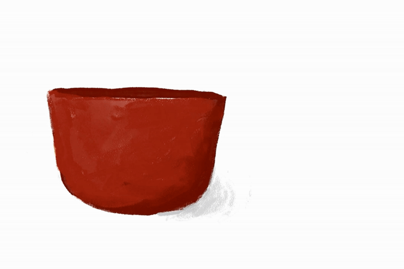

A Hand-Drawn Animation
For my Foundation Media final project, I wanted to try making a 2D animation entirely by hand. Since this project was close to the start of December, I decided to make a somewhat wintery animation featuring gingerbread cookies as moving characters. After storyboarding and sketching, I rendered every frame in color on Adobe Fresco.
The result is a hand-drawn, hand-colored animation featuring gingerbread cookie characters.
The final animation
This project was a really fun introduction to animation. Before this, I hadn't made any 2D animations by hand. I think it was a really cool starting point to gauge my current experience and see where I can improve.